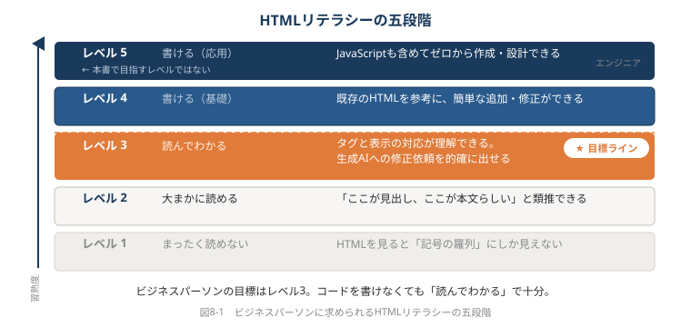
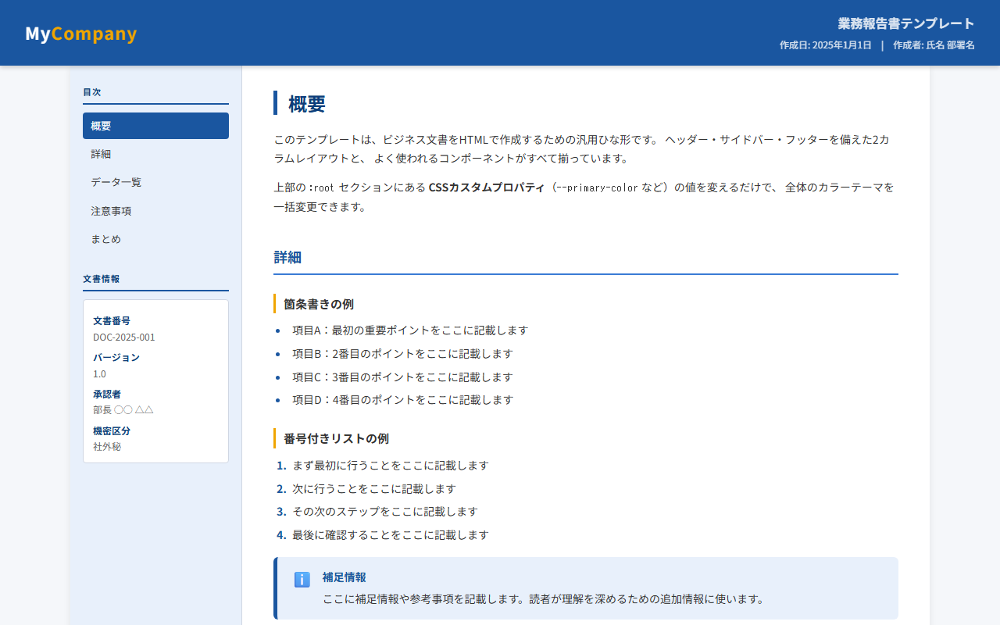

第8章 HTMLネイティブな仕事術
本章のサンプルファイル:ch08_template.html
ブラウザで開くと、本章で解説するHTMLコンテンツを実際に操作できます。
本書サポートサイトからダウンロードしてください。
本章を読む前に
ここまで7章を通じて、HTMLというフォーマットのさまざまな使い方を見てきました。提案書・報告書・ダッシュボード・図解・社内ポータル——それぞれの場面でHTMLがどう機能するかを学んできたはずです。
しかし、本書の最終章でお伝えしたいのは「技術」ではありません。
「どうやってHTMLを作るか」よりも大切なのは、「いつHTMLを選ぶかを判断できるようになること」です。それはツールの習得ではなく、思考の習慣の変化です。
この章では、HTMLを「たまに使うツール」ではなく「仕事の設計思想」として仕事に組み込むための考え方をお伝えします。
8-1 「HTMLファースト」の思考プロセス
あなたは今日の成果物を、何で作ると決めていますか？
月次報告の依頼が来たとき、あなたの頭の中で何が起きていますか。おそらく「PowerPointで作るか、Excelにするか」という二択が自動的に浮かぶのではないでしょうか。
これは決して悪いことではありません。慣れたツールで素早く動くのは、プロフェッショナルとしての判断です。しかし、「ツールを先に決める」思考の習慣には、一つ落とし穴があります。本来は「読み手の体験」を起点に成果物の形式を決めるべきなのに、ツールが形式を決めてしまっているという点です。
PowerPointを先に開くと、自然とスライド形式の成果物を作ろうとします。Excelを先に開くと、表とグラフの成果物になります。しかし本当に問うべき最初の問いは「この報告、誰がどこで読むんだろう？」ではないでしょうか。
成果物の形式を最初に問い直す習慣
「HTMLファースト」というのは、「すべてをHTMLで作れ」という意味ではありません。「成果物を作る前に、HTMLが最適かどうかを一度考える」という習慣のことです。
具体的には、新しいタスクを受け取ったとき、次の問いを頭の中でくぐらせます。
- 誰が読むか？——上司だけか、チーム全員か、外部の顧客か
- どこで読むか？——会議室のPC画面か、出先のスマートフォンか、印刷物として手元に置くか
- いつ読むか？——今回一度だけか、定期的に更新して参照し続けるか
- どう使うか？——読むだけか、数字をフィルタリングするか、印刷して持ち歩くか
この4つの問いに答えた上で、「この成果物はHTMLに向いているか？」を判断します。そうすることで、ツールが思考を縛る状況を脱せます。
HTMLに向いているのは、こういう場合です。
- 複数の人にURLで共有して、それぞれのデバイスで読んでほしい
- 定期的に更新して、常に最新版を届けたい
- グラフ・表・リンクを一体化したリッチな表示をしたい
- インタラクティブな操作（フィルタリング・タブ切り替えなど）が必要
逆に、HTMLが向いていないのはこういう場合です。
- 最終的に印刷して紙で配布・保管する
- 複雑な数値計算や集計処理を行う（計算はExcelの仕事です）
- プレゼンテーションの場でスライドを送りながら話す（PowerPointが向いています）
- 長文の編集・校正作業が中心（Wordのほうが協調編集に向いています）
読み手の体験から逆算して形式を選ぶ
あるコンサルタントが、こんな体験を話してくれました。
「クライアントから月次進捗報告の依頼を受けたんです。以前はいつもPowerPointを作っていたんですが、ふと考えてみたら、このクライアントの担当者は移動中にスマートフォンで確認することが多い。PowerPointのスライドをスマホで見るのって、正直つらいですよね。それで一度、HTMLで作ってみたんです。URLを送ったら『これ、スマホで全部見られて便利！』と言われて。内容は同じなのに、反応がぜんぜん違いました」
これが「読み手の体験から逆算する」ということです。
コンテンツの質は同じでも、フォーマットの選択で読み手の体験は大きく変わります。どれだけ優れた分析結果が書いてあっても、読み手が「見づらい」と感じれば、その情報は半分も伝わりません。
「どうやって作るか」より「誰が・どこで・どう読むか」を最初に問う。それがHTMLファーストの思考プロセスの核心です。
8-2 HTMLを使いこなすチームの作り方
「うちのチームは誰もHTMLを使わない」という状況から始めるには
「HTMLが有効だとはわかったけれど、自分一人が使っても、チームの全員はOfficeを使い続けている。意味があるのだろうか？」
この疑問は正直な問いかけです。チーム全員が一斉に新しい方法に移行することはほぼ起きません。変化はいつも、一人の先行者から始まります。
ここで大切なのは、「チームを変えようと意気込まないこと」です。変化を起こそうとアプローチすると、人は防衛的になります。効果的なのは、「自分が作った良いものを、ひっそり使えるようにしておく」ことです。
一人の先行者がチームを変える
あるIT企業のプロジェクトマネージャー、田中さん（仮名）の話をします。
田中さんは、週次の進捗報告をExcelで作っていましたが、「データが多くてチームメンバーが自分に関係のある部分だけを見づらがっている」という課題を感じていました。ある日、生成AIを使ってフィルタリング機能付きのHTML進捗ダッシュボードを作り、「こんなのも作ってみました。Excel版と内容は同じです」とSlackで共有しました。
強制でも、説明会でもありませんでした。ただ「あったらいいなと思って作りました」と置いておいたのです。
一週間後、チームメンバーの一人が「田中さん、このHTML版のダッシュボード、すごく見やすくて助かってます。自分のタスクだけフィルターできるのがいいです」と言いました。
その会話を聞いた別のメンバーが「どうやって作るんですか？」と聞いてきました。田中さんは「Claudeに頼んだら作ってくれたんですよ。プロンプトはこれです」とメモを共有しました。
三ヶ月後、チームでは3人がHTMLを使ったレポートやダッシュボードを作るようになっていました。田中さんが「HTMLをやろう」と一度も言っていないにもかかわらず。
テンプレートを共有して再利用を促す
変化を広めるもうひとつの有効な方法が「テンプレートの共有」です。
良いHTMLを一人で使い続けるのではなく、「チームの共有フォルダのtemplatesというフォルダにHTMLテンプレートを入れておきました。自由に使ってください」とSlackに一言投げておきます。すると、「ゼロから作る」というハードルがなくなり、「テンプレートを使えばいい」という気軽さで試す人が増えます。
テンプレートとして共有するのに向いているHTMLは、次のようなものです。
- チームの月次報告テンプレート：ヘッダー・KPIカード・テーブル・まとめセクションが揃ったもの
- プロジェクト提案書テンプレート：表紙・背景・提案内容・スケジュール・費用の構成が揃ったもの
- FAQページテンプレート：アコーディオン形式の質問リストが10問分空欄になっているもの
テンプレートがあることで、「内容を入れればすぐ使える」という状態になります。HTMLの経験がないメンバーでも、テンプレートの文字を書き換えるだけで十分に使えます（わからない部分は生成AIに聞けばいいだけです）。
以下は、チームで使い回せる基本的なHTMLテンプレートの骨格です。
<!DOCTYPE html>
<html lang="ja">
<head>
<meta charset="UTF-8">
<meta name="viewport" content="width=device-width, initial-scale=1.0">
<!-- ページのタイトルをここに入れる -->
<title>ページタイトル</title>
<style>
/* ========================================
チーム共通テンプレート CSS
このブロックは変更せず使い回してください
======================================== */
:root {
--brand-color: #1a56a0;
--bg-color: #f5f7fa;
--card-bg: #ffffff;
--text-main: #333333;
--text-sub: #666666;
}
* { box-sizing: border-box; margin: 0; padding: 0; }
body {
font-family: 'Segoe UI', 'Helvetica Neue', sans-serif;
background: var(--bg-color);
color: var(--text-main);
line-height: 1.7;
}
/* ヘッダー */
.site-header {
background: var(--brand-color);
color: white;
padding: 20px 40px;
display: flex;
justify-content: space-between;
align-items: center;
}
.site-header h1 { font-size: 1.4rem; }
.site-header .meta { font-size: 0.8rem; opacity: 0.75; }
/* メインコンテンツ */
.main-content {
max-width: 960px;
margin: 32px auto;
padding: 0 24px;
}
/* カード */
.card {
background: var(--card-bg);
border-radius: 10px;
padding: 28px;
margin-bottom: 24px;
box-shadow: 0 1px 5px rgba(0,0,0,.07);
}
.card h2 {
font-size: 1.1rem;
color: var(--brand-color);
margin-bottom: 16px;
padding-bottom: 10px;
border-bottom: 2px solid #e5eaf2;
}
.card p { color: var(--text-sub); }
/* フッター */
.site-footer {
text-align: center;
padding: 24px;
font-size: 0.8rem;
color: var(--text-sub);
border-top: 1px solid #e0e0e0;
margin-top: 32px;
}
</style>
</head>
<body>
<!-- ヘッダー：タイトルと作成情報を入れる -->
<header class="site-header">
<h1>ページタイトルをここに入れる</h1>
<div class="meta">作成日：〇〇年〇月〇日 ／ 担当：氏名</div>
</header>
<!-- メインコンテンツ -->
<main class="main-content">
<!-- セクション1 -->
<div class="card">
<h2>セクション1のタイトル</h2>
<p>ここに本文を入れます。</p>
</div>
<!-- セクション2 -->
<div class="card">
<h2>セクション2のタイトル</h2>
<p>ここに本文を入れます。</p>
</div>
<!-- セクション3（必要に応じて追加・削除してください） -->
<div class="card">
<h2>セクション3のタイトル</h2>
<p>ここに本文を入れます。</p>
</div>
</main>
<footer class="site-footer">
このページに関する問い合わせ：担当者名（メールアドレスまたはTeams）
</footer>
</body>
</html>このテンプレートをチームの共有フォルダに report-template.html として保存しておくだけで、誰でも「テンプレートを開いて中身を書き換える」だけでHTML文書を作れます。CSSの知識がなくても、h2 のテキストを変えて p のテキストを変えるだけで、統一感のあるHTMLページが完成します。
💡 AIへの依頼例
【目的】チームで使い回せる月次報告書のHTMLテンプレートを作りたい
【含める要素】ブランドカラーを反映したヘッダー、KPIカード（3つ）、本文セクション（3枠）、担当者・作成日を表示するフッター
【スタイル】モダンでシンプル。スマートフォンでも読みやすいレスポンシブデザイン
【出力形式】完全なHTMLファイルとして出力してください。テンプレートとして再利用しやすいようにコメントを随所に入れてください
このプロンプトをそのままClaude/ChatGPT/Geminiに貼り付けて使えます。
「触れる環境」を整える
チームにHTMLを広めるとき、もうひとつ大切なことがあります。試せる環境を整えることです。
「試してみたいけど、どこで試せばいいかわからない」という方は多いです。HTMLを作る環境として、以下のようなものを共有しておくと、チームのメンバーが気軽に試せるようになります。
- Visual Studio Code（無料）：テキストエディタとして最もポピュラーで、HTMLの色分け表示や補完機能があります。「VSCodeでHTMLを書いて、ブラウザで確認」という最小環境を構築する手順を1ページにまとめておくと親切です。
- CodePen・JSFiddle（ブラウザ上で試せる）：インストール不要でブラウザ上でHTMLを書いて結果を確認できるサービスです。「まず試してみる」用途に向いています。
- 生成AIへのアクセス：ClaudeやChatGPTに「このHTMLを修正してほしい」と依頼できる環境さえあれば、HTMLの知識がなくても実践できます。
「試せる場所がある」という安心感が、一歩を踏み出しやすくする環境を作ります。
8-3 HTMLとOfficeの「共存」を設計する
「OfficeをやめてHTMLに移行すべきか」という誤った問い
本書のタイトルは「生成AI時代は、なんでもHTML！」ですが、これは「Officeを捨ててHTMLに全部移行せよ」という意味ではありません。
Officeが圧倒的に強い領域はあります。Excelの数値計算能力と関数の柔軟性は、HTMLで代替できません。Wordの文書校正・変更追跡機能は、複数人での編集作業に適しています。PowerPointの視覚的なスライド作成は、プレゼンテーションの場で有効です。
OfficeとHTMLを「どちらが良いか」という対立で考えるのは適切ではありません。用途に応じた最適解を選ぶこと——それが本書の主張の本質です。
「出口としてのHTML」という考え方
OfficeとHTMLを共存させる最も実践的なパターンは、「作業はOffice、出力はHTML」というハイブリッドワークフローです。
具体例を挙げます。
週次KPIダッシュボードの場合：
- Excelでデータを集計・計算する（Excelが最強の仕事）
- 集計結果をJSON形式でエクスポートする（JSONとは、データをシンプルな文字列として表現する形式です。
[{"name":"東京", "sales":1200}, {"name":"大阪", "sales":980}]のように書きます） - HTML + JavaScript でそのJSONを読み込み、グラフと表で表示する
この流れを生成AIに設計させることができます。「Excelの集計データを読み込んで表示するHTMLダッシュボードを作ってほしい。データはJSONで持ちたい」とプロンプトに書くと、JavaScriptのコードを含むHTMLが生成されます。以後、Excelのデータを更新してJSONを更新するだけで、ダッシュボードの表示が自動的に更新されます。
<!-- HTML+JavaScriptでJSONデータを読み込む基本パターン -->
<!DOCTYPE html>
<html lang="ja">
<head>
<meta charset="UTF-8">
<title>週次KPIダッシュボード</title>
<script src="https://cdn.jsdelivr.net/npm/chart.js"></script>
<style>
body { font-family: sans-serif; max-width: 800px; margin: 40px auto; padding: 0 20px; }
canvas { margin-top: 24px; }
</style>
</head>
<body>
<h1>週次KPIダッシュボード</h1>
<canvas id="salesChart" width="760" height="300"></canvas>
<script>
// ここにExcelからエクスポートしたデータを貼り付ける
// （または別ファイルのJSONをfetch()で読み込む）
const salesData = [
{ month: "1月", sales: 1200 },
{ month: "2月", sales: 1350 },
{ month: "3月", sales: 980 },
{ month: "4月", sales: 1580 },
{ month: "5月", sales: 1420 },
{ month: "6月", sales: 1690 }
];
const ctx = document.getElementById('salesChart').getContext('2d');
new Chart(ctx, {
type: 'bar',
data: {
labels: salesData.map(d => d.month),
datasets: [{
label: '月次売上（万円）',
data: salesData.map(d => d.sales),
backgroundColor: '#4a90d9',
borderRadius: 4
}]
},
options: {
responsive: true,
plugins: {
legend: { display: false }
},
scales: {
y: { beginAtZero: true }
}
}
});
</script>
</body>
</html>この例では、salesData の部分にExcelからエクスポートしたデータを貼り付けるだけで、棒グラフが表示されます。データが変わったら salesData の数値を書き換えるか、JSONファイルを差し替えるだけです。
💡 AIへの依頼例
【目的】Excelで集計した月次売上データをHTMLダッシュボードとして可視化したい
【含める要素】棒グラフ（月別売上）、部門別フィルタリング機能、KPIサマリーカード（売上合計・前月比・目標達成率）
【スタイル】シンプルなビジネス向けデザイン。Chart.jsを使用してグラフを描画してください
【出力形式】完全なHTMLファイルとして出力してください。データ部分はJavaScript内のJSON配列として記述し、Excelの値を貼り替えるだけで更新できる構造にしてください
このプロンプトをそのままClaude/ChatGPT/Geminiに貼り付けて使えます。
全部を変えない——用途別の最適解
もう少し整理すると、OfficeとHTMLの使い分けはこのように考えられます。
| シーン | 向いているツール | 理由 |
|---|---|---|
| データ計算・集計 | Excel / スプレッドシート | 関数・ピボット・条件付き書式が強い |
| 複数人での文書編集・校正 | Word / Google Docs | 変更追跡・コメント機能が有効 |
| プレゼンテーション（対面・投影） | PowerPoint | スライド進行・アニメーションが適切 |
| URL共有・スマホ対応が必要な報告 | HTML | どのデバイスでも閲覧できる |
| 定期更新して参照するダッシュボード | HTML | 更新したら全員に最新版が届く |
| インタラクティブな表・フィルタリング | HTML | ブラウザ上での操作が可能 |
| 社内FAQ・ナレッジポータル | HTML | URLで常に最新版を参照できる |
| 印刷して配布・保管する資料 | Word / Excel | 印刷レイアウトに最適化できる |
「Officeをやめる」のではなく、「出口を選ぶ判断力を持つ」——それがハイブリッドワークフローの考え方です。
8-4 これからのビジネスパーソンに求められるリテラシー
「コードが書けること」は目標ではない
本書を読んで「HTMLが書けるようにならないといけないのか」と不安になった方がいるかもしれません。結論から言えば、その必要はありません。
生成AIが実装を担う時代において、コードを書く技術よりも重要なのは「読んでわかる」レベルの理解と「何を作るか」を決める判断力です。
「読んでわかる」とはどういう状態か、具体例で考えます。
生成AIが以下のようなコードを出力したとします。
<h1 style="font-size: 2rem; color: #1a56a0;">月次報告書</h1>このコードが読める方は「h1 が見出し、font-size: 2rem が文字サイズ、color: #1a56a0 が文字色の設定」と理解できます。そして「文字サイズを少し小さくしてほしい」という場合に「font-size の値を変えてください」と的確に依頼できます。
一方、「読んでわからない」状態の方は、生成AIに「なんか違う気がする」とだけ伝えることしかできません。すると生成AIは何が問題かわからず、全体をリデザインしようとすることがあります。
「どこを変えれば何が変わるか」を読み取れる能力——これが「読んでわかる」レベルのHTMLリテラシーです。書ける必要はありませんが、読めるといいでしょう。
HTMLリテラシーの五段階
ビジネスパーソンとして目指すべきHTMLの理解レベルを、五段階で整理します。
| レベル | 状態 | 何ができるか |
|---|---|---|
| 1 | まったく読めない | HTMLを見ると「記号の羅列」にしか見えない |
| 2 | 大まかに読める | タグの意味はわからなくても、「ここが見出し、ここが本文らしい」と類推できる |
| 3 | 読んでわかる | どのタグがどの表示要素に対応するか理解できる。生成AIへの修正依頼を的確に出せる |
| 4 | 書ける（基礎） | 既存のHTMLを参考に、簡単な追加・修正をみずから行える |
| 5 | 書ける（応用） | JavaScriptも含めてゼロから作成・設計できる |

ビジネスパーソンの目標はレベル3です。エンジニアのようにレベル5を目指す必要はありません。しかし、レベル1・2では「生成AIと協力して成果物を磨く」という体験ができません。
「何となく読める」から「読んでわかる」への橋渡しは、実は本書を通じてかなりの部分ができています。各章のコードサンプルを「写経」するつもりで一度読んでみてください。「あ、h2 が中見出しで、p が段落テキストで……」という読み方ができるようになると、生成AIとの対話の質が格段に上がります。
生成AIと「共同編集者」として働く
生成AIを「答えを出してくれる機械」として使うか、「一緒に作品を作るパートナー」として使うかで、アウトプットの質は大きく変わります。
「共同編集者」として生成AIを使うとはどういうことか。具体例で説明します。
機械として使う場合：
「月次報告書のHTMLを作ってください」
→ 生成AIが何かを作る → 「これでいいや」か「全然違う、やり直し」
共同編集者として使う場合：
「月次報告書のHTMLを作ってください。読み手はマネジメント層で、スマートフォンで見ることが多いです。KPIを3つ大きく表示して、詳細データは折りたたみで見せる構成にしてください」
→ 生成AIが具体的な構成を提案する
→ 「KPIカードのデザインはいいのですが、折りたたみの部分をアコーディオンではなくタブ切り替えにしてもらえますか？」と対話しながら修正する
→ 「このタブのラベルを『概要』『詳細』『前月比』に変えてください」と細部を詰める
この対話の過程で、生成AIは「実装の技術者」の役割を担い、あなたは「プロデューサー」の役割を担います。何を作るか、どんな体験を提供するか、読み手にとって何が大切かを判断するのは人間の役割です。
HTMLリテラシー（読んでわかるレベル）があることで、この対話がよりスムーズになります。「padding（余白）を少し大きくしてほしい」「フォントサイズが大きすぎる」「グラフの色を会社のブランドカラーに合わせてほしい」——こうした具体的な指示が出せると、数回の対話でほぼ思い通りの成果物が完成します。
💡 AIへの依頼例
【目的】チームのHTML活用を広めるため、「誰でもHTMLを試せる入門ページ」を社内共有用に作りたい
【含める要素】「HTMLとは何か」の1分説明、生成AIへの依頼テンプレート（コピペ用）、VSCode・CodePen・Claude/ChatGPTへのリンクカード、よくある質問（FAQ）アコーディオン
【スタイル】親しみやすいトーン。難しそうに見えないシンプルなデザイン
【出力形式】完全なHTMLファイルとして出力してください。社内フォルダに置くだけで誰でも開ける自己完結型にしてください
このプロンプトをそのままClaude/ChatGPT/Geminiに貼り付けて使えます。
情報発信力がキャリアの武器になる時代
少し視野を広げて、個人のキャリアの話をします。
HTMLで作ったコンテンツが持つ最大の特性は「届く力」です。URLがあれば、誰にでも、どこにいても、どのデバイスからでも届けられます。
社内での話をすると、こんなことが起きています。
ある会社のHR部門の若手社員が、「新卒社員向けのオンボーディング情報が毎年まとまっていなくて、新人が困っている」という問題を感じていました。彼女は、生成AIを使ってオンボーディングHTMLページを作り、社内SharePointに公開しました。最初は自分のチームだけに共有しましたが、「これわかりやすい」と別の部署からも活用されるようになりました。
翌年、人事部門のマネージャーから「新人教育の仕組みを整備するプロジェクトにアサインしてほしい」と声がかかりました。「わかりやすい情報をまとめる人」というイメージが、自然と認知されていたからです。
彼女が特別なITスキルを持っていたわけではありません。「問題を見つけて、HTMLページという形で解決策を作り、共有した」——それだけです。
コンテンツを作る能力と届ける能力を組み合わせた「情報発信力」は、これからのビジネスパーソンにとって重要な武器になります。会議で発言することも発信ですが、URLひとつで多くの人に届くHTMLページを作る能力は、それとは異なる種類の影響力を生み出します。

ch08_template.html
本書サポートサイトよりダウンロードし、ブラウザで開いてご確認ください。
まとめ
本章では、HTMLを「たまに使うツール」ではなく「仕事の設計思想」として取り込むためのマインドセットを見てきました。
HTMLネイティブな仕事術の本質は、次の3つに集約されます。
- 成果物の形式を最初に問い直す習慣：「何で作るか」を反射的に決めるのではなく、「誰がどこでどう使うか」を起点に形式を選ぶ。この一瞬の問い直しが、成果物の品質と届き方を変えます。
- 一人が始めれば、チームは変わる：全員を一度に変えようとしません。良いものを作って共有し、テンプレートとして置いておく。変化は強制ではなく、「便利さの伝播」によって広がります。
- 「読んでわかる」レベルのリテラシーが生成AIとの協働を強化する：コードを書く必要はありませんが、読めると対話の質が上がります。生成AIを「機械」ではなく「共同編集者」として使うための土台がHTMLリテラシーです。
あなたが今日作る成果物を、HTMLで作ったとしたら何が変わりますか。まずそれを想像することから、HTMLネイティブな仕事術は始まります。
コラム：ツールリテラシーとは何か——使える・読める・選べるの三段階
あるツールを「リテラシーがある」と言える状態には、三段階があると筆者は考えています。
第一段階：使える
ツールを使って成果物を作ることができます。ただし、他の選択肢があることや、なぜそのツールを使うのかを意識していない段階です。第二段階：読める
他の人が作った成果物（コード・設定・構造）を見て、「何がどうなっているか」を理解できる段階です。修正依頼や改善の提案が的確にできます。第三段階：選べる
複数の選択肢を比較して、「この用途にはこのツールが最適」という判断ができる段階です。ツールが目的を規定するのではなく、目的に応じてツールを選べます。本書が目指してきたのは、HTMLに対してこの「第三段階：選べる」状態になることです。HTMLを常に使うのではなく、HTMLが最適な場面でHTMLを選べる。そして、その判断を仕事の設計に組み込める。
これはHTMLという特定技術のリテラシーではなく、「成果物の形式を問い直す習慣」というメタリテラシー（より上位の思考習慣）です。このメタリテラシーがあれば、HTMLの次に新しいフォーマットが登場したときにも、同じ思考プロセスで適応できます。
第8章では、HTMLを「ツール」としてではなく「仕事の設計思想」として取り込むための考え方を学びました。一人の先行者から始まるチームへの変化、OfficeとHTMLの共存設計、そして「読んでわかる」リテラシーが生成AIとの協働を強化するという話をしてきました。
本書の最後、終章では「あなたの仕事はどこからHTML化できるか」という問いに立ち返ります。第1章から第8章の学びを振り返り、あなた自身の仕事の文脈で「最初の一歩」を踏み出すためのセルフチェックと、ドキュメントの民主化が進む未来への展望でしめくくります。
あなたの仕事は、どこからHTML化できるでしょうか。